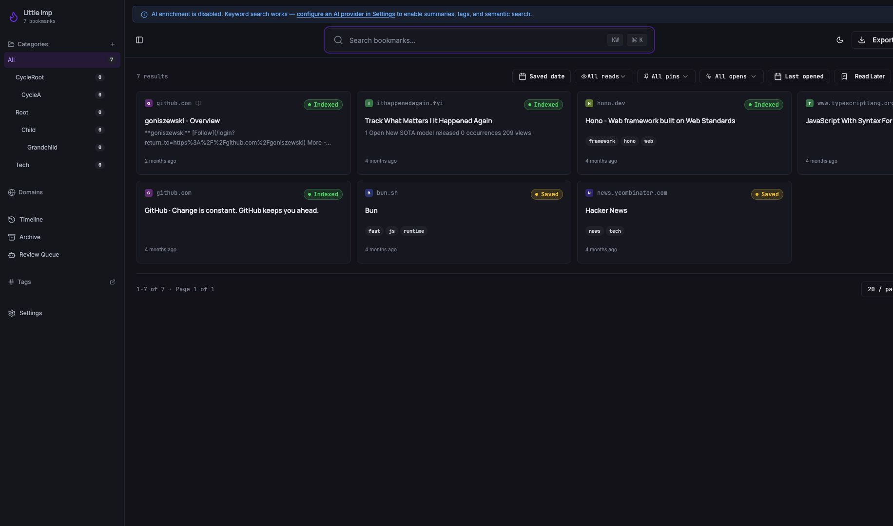
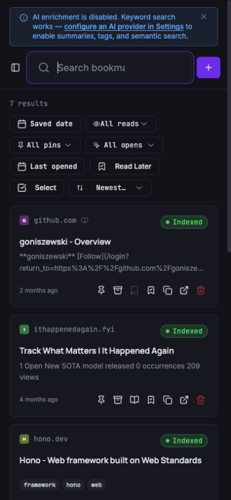

Grimoire Task Report
Hallmark UI System Remediation

Before
The product relied on Inter for every typographic role, pure white and black extremes, and repeated raw palette utilities. Bookmark actions depended on hover alone, and the narrow header clipped its primary control.
Problem
Those choices weakened hierarchy and coherence, reduced keyboard and touch discoverability, and caused an actual 320px overflow.
Changes Added
- Introduced Manrope display typography, softened neutral surfaces, and semantic info, success, warning, and knowledge color tokens.
- Replaced audited raw palette utilities and broad
transition-allusage with semantic classes and targeted transitions. - Made bookmark actions available through keyboard focus and on compact touch layouts; labelled the detail title edit control.
- Made the header compact at narrow widths while retaining an accessible name for the icon-only Add action.
Result
Library, timeline, review, detail, banner, and settings states now draw from one semantic visual system. The responsive header has no horizontal overflow from 320px through desktop widths.
Verification
- Focused Vitest coverage for bookmark actions, title editing, and narrow-header label behavior.
- Frontend type check, lint, production build, and whitespace validation.
- Live visual checks at 320, 375, 390, 414, 768, 1440, and 1920px; each checked viewport had equal document client and scroll widths.
Additional screenshot

Files changed
src/index.cssandtailwind.config.tssrc/components/BookmarkCard.tsxandsrc/components/BookmarkDetail.tsxsrc/components/Timeline.tsx,src/components/ReviewQueue.tsx, banner, settings, and supporting page componentssrc/pages/Index.tsxplus focused component and page tests